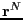
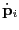
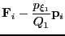

The final thermostat we consider is one based on the extended Lagrangian formalism, which leads to a deterministic trajectory; i.e., there are no random forces or velocities to deal with. The most common and so far most reliable thermostat of this kind is the Nosé-Hoover thermostat. This thermostat can be implemented as a ``single'' or a ``chain''; here, we consider a chain.
The basic idea of the Nosé-Hoover thermostat is to use a friction
factor to control particle velocities. This friction factor is
actually the scaled velocity, , of an additional and
dimensionless degree of freedom, . This degree of freedom has
an associated ``mass'', , which effectively determines the
strength of the thermostat. The equations of motion obeyed by this
additional degree of freedom guarantee that the original degrees
of freedom (,  ) sample a canonical ensemble.
This degree of freedom is the terminus of a chain of similar degrees
of freedom, each with their own mass. The chain has a total of
) sample a canonical ensemble.
This degree of freedom is the terminus of a chain of similar degrees
of freedom, each with their own mass. The chain has a total of
 ``links.'' The overall set of equations of
motion are:
``links.'' The overall set of equations of
motion are:
| (190) | |||
|  |  | (191) | |
| (192) | |||
| (193) | |||
| (194) | |||
 |
(195) |
The main advantage of the Nosé-Hoover chain thermostat is that the
dynamics of all degrees of freedom are deterministic and
time-reversible. No random numbers are used. The code
mdlj_nhc.c
implements an  = 2
Nosé-Hoover chain thermostat in an MD simulation of an Lennard-Jones
fluid, by implementing Algorithms 30, 31, and 32 from F&S. The two
masses of the thermostats are defaulted to = = 0.1. This
``low'' mass results in a ``loose'' control of temperature; higher
masses mean a tighter control. is the degree of freedom whose
velocity is used to scale particle velocities, so one might
hypothesize that the mass is the more important. (You can
verify this as an exercise.) Though I haven't verified that my code
is 100% bug-free, apparently, the effect of increasing the mass of
the coupling degree of freedom is to lengthen the decay time constant
of the response to an instantaneous temperature jump:
= 2
Nosé-Hoover chain thermostat in an MD simulation of an Lennard-Jones
fluid, by implementing Algorithms 30, 31, and 32 from F&S. The two
masses of the thermostats are defaulted to = = 0.1. This
``low'' mass results in a ``loose'' control of temperature; higher
masses mean a tighter control. is the degree of freedom whose
velocity is used to scale particle velocities, so one might
hypothesize that the mass is the more important. (You can
verify this as an exercise.) Though I haven't verified that my code
is 100% bug-free, apparently, the effect of increasing the mass of
the coupling degree of freedom is to lengthen the decay time constant
of the response to an instantaneous temperature jump:
|